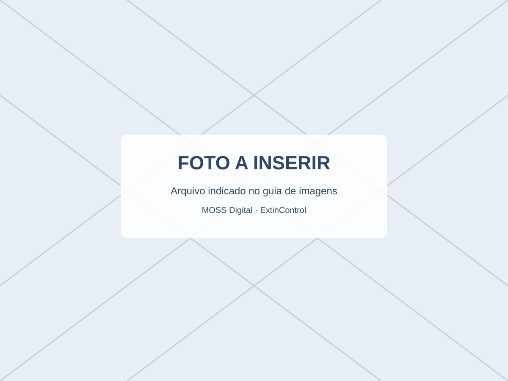

⚠️ Demonstração administrativa. Não realiza inspeção, manutenção, testes, certificação nem garante conformidade com normas. Empresas habilitadas devem definir os procedimentos e prazos reais.
CONTROLE DO DIA A DIA
Registre equipamentos e acompanhe datas.
Use um identificador genérico, local e data escolhida apenas para experimentar esta ferramenta.

AGENDA DE ACOMPANHAMENTO
Registros recentes
| Identificador | Local | Data informada | Indicador de agenda | Ação |
|---|
DA DEMO AO SISTEMA REAL
Que conexões serão necessárias?
Banco de dados e autenticação para usuários e empresas.
Perfis de funcionários, logs de mudanças e histórico.
Alertas de agenda, validados por responsável técnico.